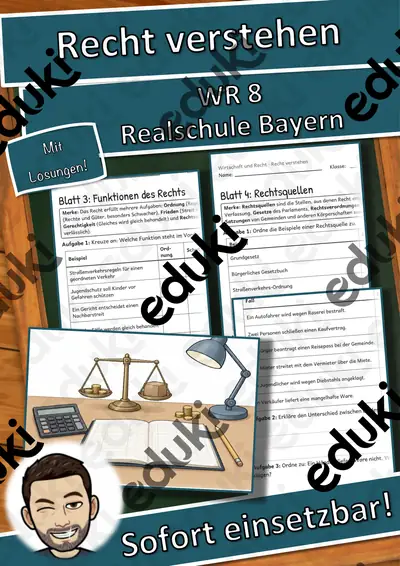

Arbeit und Arbeitsmarkt – Arbeitsheft mit Lösungen (WR 8, Realschule Bayern)
Wozu arbeiten wir, und was passiert, wenn es keine Arbeit gibt? Die Lernenden erarbeiten die Bedeutung von Arbeit für den Einzelnen und die Gesellschaft, unterscheiden Erwerbs- und unbezahlte Arbeit, verstehen den Arbeitsmarkt als Treffpunkt von Angebot und Nachfrage, berechnen eine Arbeitslosenquote und beschreiben Arten, Ursachen und Folgen der Arbeitslosigkeit sowie Gegenmaßnahmen.
Für das Fach Wirtschaft und Recht (WR), Jahrgangsstufe 8, an der Realschule in Bayern.
Enthalten (15 Seiten): Lehrerinfo mit Einsatzhinweisen · 9 Arbeitsblätter, u. a. Arbeit als Lebensgrundlage; Arten von Arbeit; Der Arbeitsmarkt; Zahlen und Quote; Arten der Arbeitslosigkeit; Folgen der Arbeitslosigkeit; Was kann man tun? · Lernzielkontrolle · Lösungen zu allen Blättern.
Einsatz: Übung und Vertiefung im Unterricht, als Hausaufgabe, zur Wiederholung oder in Vertretungsstunden. Zum Ausdrucken und Kopieren. Alle Namen, Betriebe und Beträge in den Aufgaben sind erfunden.
Texte KI-gestützt und vom Autor geprüft.
Ähnliche Materialien

Recht verstehen – Arbeitsheft mit Lösungen (WR 8, Realschule Bayern)

Wirtschaften im Alltag – Arbeitsheft mit Lösungen (WR 8, Realschule Bayern)

Angebote vergleichen: Einkaufskalkulation – Arbeitsheft mit Lösungen (BwR 8, Realschule Bayern)

Agentur für Arbeit – Arbeitsheft mit Lösungen (WR 8, Realschule Bayern)

Kurse an der Börse – Arbeitsheft mit Lösungen (WR 8/9, Realschule Bayern)

Bankgeschäfte für Kunden – Arbeitsheft mit Lösungen (WR 8/9, Realschule Bayern)

Kaufvertrag in der Krise – Arbeitsheft mit Lösungen (WR 8, Realschule Bayern)